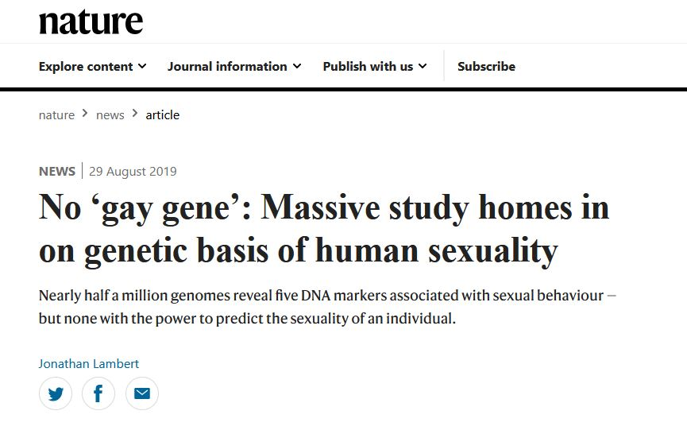

Homosexuality nowadays is very common in humans but its not a natural thing and there are many studies which concludes:
There is no Gay Gene
in human body
Humans are naturally born as hetrosexual. The attraction towards same sex gender is a disorder which is caused by many reasons like psychological issues, societal issues, hormonal imbalance etc and should be cured through proper treatment rather than
showing support towards them which encourages the gays to commit homosexuality even more and makes them proud of how they are.
The supporters of LGBT community often bring forth the argument of homosexuality being normal
in almost 450+ species on earth to justify it among humans and that it should be normalized between humans too but that's simply not how it works. Every specie is unique and different in their own way. Black widow spider eat its own man after
mating so shall this act be normalize between humans too? A nurse shark rape others shark so shall we normalize this between humans too? So many animals eat their own children so shall this be normalized between humans too? So this argument
of homosexuality being normal in animal kingdom is totally illogical and obsurd.
So being gay is not natural and this whole homosexuality thing is nothing more than a disorder which should be dealth with as soon as possible.
For furthur information about
No Gay Gene
study you can
Visit Nature.com.